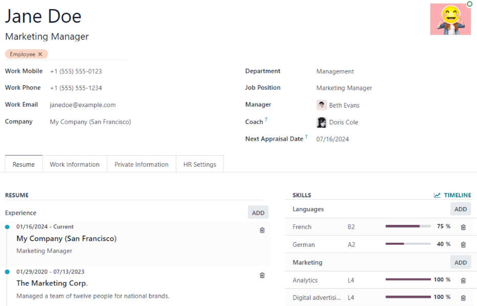
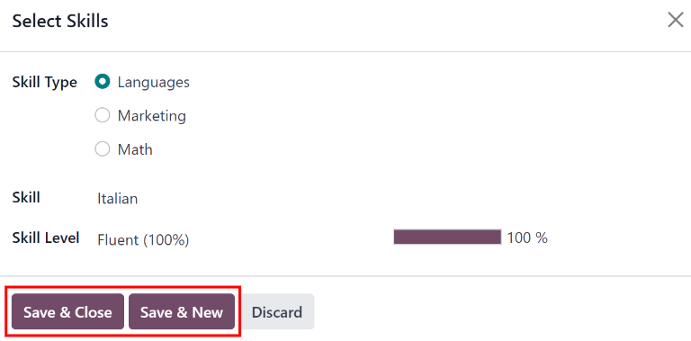
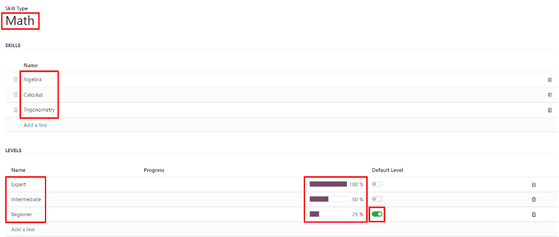
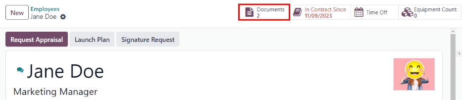

新员工¶
新员工入职后，第一步是创建新的员工记录。该记录集中存储了员工的所有重要信息，包括 一般信息、工作经历和技能、各种工作信息、个人资料、文件 等。
首先，打开 应用程序，然后点击左上角的 新建 按钮。这样就会出现一个空白的雇员表单。
继续填写所需的信息以及其他详细信息。
注解
当前公司的电话号码和名称将填入 工作电话 和 公司 字段。如果安装了 考评 应用程序，则 下次考评日期 字段将填入距当前日期六个月的日期。
一般信息¶
输入数据后，员工表单会自动保存。不过，也可以随时点击 手动保存 选项，手动保存表单，图标为 （带向上箭头的云）。
必填字段¶
员工姓名：输入员工姓名。
公司：从该字段的下拉菜单中，选择新员工受雇的公司，或在该字段中键入公司名称，然后点击:guilabel:
创建`或:guilabel:`创建并编辑...，创建一个新公司。

可选字段¶
照片：在员工表单右上方的图片框中，点击 ✏️（铅笔） 编辑图标，选择要上传的照片。
工作职位：在员工姓名下输入员工的职位名称，或从下面的 工作职位 字段下拉菜单中选择职位名称，使顶部字段自动填充。员工姓名下的 工作职位 字段可以修改，*不需要*与下面字段中的 工作职位 下拉菜单中的选择一致。
Example
虽然建议职位匹配，但如果需要，顶部字段中键入的描述可以包含比所选的下拉菜单:guilabel:`工作职位`更具体的信息。
例如，如果某人受聘为销售代表，在 招聘 应用程序中配置为 销售代表，则可在下拉 工作职位 字段中选择该职位。
在 员工姓名 字段下方键入的 工作职位 字段中，职位可以更具体，例如，如果该员工只专注于订阅销售，可以输入
销售代表 - 订阅。
标签：从下拉菜单中选择一个标签，为员工添加相关标签。可在此字段中键入任何标签。一旦创建，所有员工记录都可使用新标签。可添加的标签数量不受限制。
工作联系信息：输入员工的 移动电话、办公电话、工作邮箱 和/或 公司 名称（如果尚未自动填充）。
部门：从下拉菜单中选择员工所在部门。
工作职位：从下拉菜单中选择员工的工作职位。选择完成后， 员工姓名 字段下方的 工作职位 字段会自动更新，以反映当前选择的工作职位。这些职位来自 招聘 应用程序，反映当前配置的职位。
经理：从下拉菜单中选择员工的经理。
教练：从下拉菜单中选择员工的教练。
下一次考评日期：只有安装了 考评 应用程序，该字段**才**可见。会自动填充一个根据 考评 应用程序中配置的设置计算得出的日期。可使用日历选择器修改该日期。
注解
选择 经理 后，若 导师 字段为空，则所选经理将自动填充 导师 字段。
小技巧
要编辑所选的 部门、经理、教练`或 :guilabel:`公司，请点击相应选项旁边的 内部链接`箭头。:guilabel:`内部链接`箭头将打开所选表单，以便进行修改。编辑完成后点击 :guilabel:`保存。
其他信息标签¶
简历选项卡¶
简历¶
然后，在 简历 选项卡中输入员工的工作经历。每行简历都必须单独输入。首次创建条目时，点击 创建新条目，出现 创建简历行 表单。添加条目后，:guilabel:`创建新条目`按钮将被:guilabel:`添加`按钮取代。为每个条目输入以下信息。

标题：输入以前工作经历的标题。
员工：从下拉菜单中选择员工。
类型：从下拉菜单中选择 工作经历、教育、业余项目、内部认证、已完成内部培训，或输入新条目，然后点击 :guilabel:`创建”（类型）”。
显示类型：从下拉菜单中选择 经典 表示典型工作经验，认证 表示通过认证获得的经验，或 课程 表示非认证类别的课程。
时长：输入工作经历的开始和结束日期。要选择日期，请点击第一个空字段，弹出日历窗口。继续使用 <（左箭头） 和 >（右箭头） 图标滚动到所需的月份，然后点击日期进行选择。重复此过程，找到并选择结束日期。选择所需日期后，点击 ✔️ 应用。
说明：在此字段中输入任何相关详细信息。
输入所有信息后，如果只需添加一个条目，请单击 保存并关闭 按钮；如果要保存当前条目并新建简历行，请单击 保存并新建 按钮。
注解
保存新员工表单后，当前职位和公司会自动添加到 简历 选项卡中，结束日期列为`当前`。
技能¶
员工的技能可在 简历 选项卡中输入，与创建简历行的方式相同。
要在员工记录中添加技能，必须先配置技能类型。如果没有配置技能类型，则在:guilabel:简历`选项卡的:guilabel:`技能 `部分会出现一个:guilabel:`创建新技能`按钮。 在向员工记录添加任何技能之前，请先:ref:`配置技能类型 <employees/skill-types>。
如果已配置技能类型，则会出现 从列表中选择一个技能`按钮。点击 :guilabel:`从列表中选择一个技能 按钮，然后为每个技能选择以下信息。
技能类型：点击技能类型旁边的单选按钮，选择 技能类型。
技能：选择 技能类型 后，与该 技能类型`相关的相应技能会出现在下拉菜单中。例如，选择 :guilabel:`语言 作为 技能类型 字段，则 技能 字段下会出现多种语言供选择。选择适当的预配置技能，或键入新技能，然后点击 :guilabel:`创建”（新技能）”。
技能等级：与所选 技能类型`相关的预定义技能等级出现在下拉菜单中。首先，选择一个 :guilabel:`技能等级，然后进度条会自动显示该技能等级的预定义进度。技能等级和进度可在 技能等级 弹出窗口中修改，该窗口可通过 技能等级 字段旁边的 内部链接 箭头访问。
如果只有一个技能要添加，请点击 保存并关闭 按钮；如果只有一个技能要添加，请点击 保存并新建 按钮保存当前条目并立即添加另一个技能。
要删除 简历 选项卡中的任何一行，请单击 🗑️ （垃圾桶） 图标删除此条目。单击相应选项旁边的 添加 按钮，即可添加新行。
重要
只有拥有 主管：管理所有员工 或:guilabel:员工`应用程序的 :guilabel:`管理员 权限的用户才能添加或编辑技能。
技能类型¶
要在员工表单中添加技能，必须配置 技能类型。进入 查看当前配置的技能类型并创建新的技能类型。
注解
语言 的默认技能已预先配置为技能*类型*，但该技能类型中没有列出特定的语言*技能*。在使用 语言 技能类型之前，必须对其进行完全配置。
点击 新建，出现新的 技能类型 表格。填写新技能类型的所有详细信息。对所有需要的技能类型重复此操作。
技能类型：输入技能类型的名称。该名称将作为更具体技能的上级类别，应具备通用性。
技能：点击 添加行，输入新技能的 名称，然后重复输入所有其他所需技能。
级别：点击 添加行，输入关卡的 名称。然后，点击 进展 字段，输入该级别的百分比（0-100）。根据需要对所有其他级别重复此操作。
默认级别：点击级别行上的切换按钮，将该级别设置为默认级别。通常情况下，最低等级被设置为默认等级，但也可以选择任何等级。切换按钮变成绿色，表示它是该技能的默认级别。只能将一个级别设置为默认级别。
Example
要添加数学技能集，请在 名称 字段中输入
数学。然后，在 技能 字段中输入`代数`、微积分和`三角学`。最后，在 级别 字段中输入初级、中级 `和 `高级，进度`分别为 `25、50和100。最后，点击初级行上的 设置默认，将其设置为默认技能等级。
输入数据时，技能类型 表单会自动保存。
小技巧
表单填写完毕后，点击屏幕上方的 手动保存 按钮（由 朝上箭头云 图标表示），:guilabel:`级别`将按降序重新排列，最高级别在顶部，最低级别在底部，与默认级别和输入顺序无关。
工作信息选项卡¶
在 工作信息 选项卡中，可以找到员工的具体工作相关信息。这里列出了他们的工作时间表、各种角色、谁批准了具体请求（请假、时间表和费用）、远程工作时间表和具体工作地点的详细信息。
点击 工作信息 选项卡进入此部分，为新员工输入以下信息：
位置：从下拉菜单中选择 工作地址。要修改地址，请将鼠标悬停在地址的第一行（如果有多行），以显示 内部链接 箭头。点击 内部链接 箭头，打开公司表格，并进行任意编辑。
完成后，使用面包屑链接导航回新员工表格。
如果需要新的工作地址，请在字段中键入地址，然后点击 :guilabel:`（创建[新地址]）`添加地址，或点击 :guilabel:`创建并编辑…`添加新地址并编辑地址表。
审批人：要查看此部分，用户必须拥有 管理 或 主管：管理所有员工`权限。使用下拉菜单，选择负责审批该员工的 :guilabel:`费用、请假 申请、工时单 条目和 :guilabel:` 考勤` 记录的用户。
将鼠标悬停在任一选项上，显示 内部链接 箭头。
点击 内部链接 箭头，打开包含审批人的 姓名、电子邮箱、公司、 电话、手机 和 默认仓库 字段的表单。如有需要，可以修改这些字段。
完成后，使用面包屑链接导航回新员工表格。
远程工作：使用下拉菜单选择员工每周每天的默认工作地点。默认选项是 家、办公室`或 :guilabel:`其他。
可在字段中输入新位置，然后点击 创建（新位置）`添加位置，或点击 :guilabel:`创建并编辑…，添加新位置并编辑表格。
编辑完成后，点击 保存并关闭，新位置就会添加并填充到字段中。
对于周六和周日等非工作日，请将该字段留空（未指明）。
注解
也可以通过导航到 。要修改工作地点，请点击现有地点，然后在表单上进行任意更改。
点击 新建，创建新位置，然后在表单中输入以下信息。所有字段均为**必填**。
工作地点：输入工作地点的名称。根据需要，可以是一般名称，也可以是具体名称，如
家或1 号楼二层。工作地址：使用下拉菜单，选择工作地点的地址。
封面图像：点击图标以将其选为 封面图像。选项包括 家 图标、办公楼 图标和 :guilabel:`GPS 定位标记`图标。
公司：使用下拉菜单，选择位置适用的公司。默认情况下，当前公司将填充此字段。
日程安排：选择员工的 工作时间 和 时区。通过 内部链接 箭头可打开具体每日工作时间的详细视图。可在此处修改或删除工作时间。
排期：从 角色 和 默认角色 字段的下拉菜单中选择一个角色。如果 默认角色 被选为角色，它将自动添加到 角色 列表中。
重要
出现在 审批人 部分下拉菜单中的用户**必须**具有相应人力资源角色的*管理员*权限。
要检查谁拥有这些权限，请进入 。点击员工，查看:guilabel:访问权限`选项卡中的:guilabel:`人力资源 部分。
注解
工作时长 与公司的工作时间有关，员工的工作时长**不能**超出公司的工作时间。
个人的工作时间因公司而异。因此，对于多公司数据库，每家公司**必须**设置自己的工作时间。
如果员工的工作时间没有配置为公司的工作时间，则可以添加新的工作时间，或修改现有的工作时间。
要添加或修改工作时间，请进入 。然后，点击 新建 添加新的工作时间，或从列表中选择 工作时间 编辑现有的工作时间。
有关创建和编辑工作日程的具体详情，请参阅薪酬管理文档中的 工作日程 部分。
创建新工作时间或修改现有工作时间后，可在员工表单中设置 工作时间。在 工作信息 选项卡的 日程安排 部分，使用下拉菜单选择员工的工作时间。
个人信息选项卡¶
在创建员工时，:guilabel:`私人信息`选项卡中的信息不是必需的，但该部分中的某些信息可能对公司的薪酬管理部门至关重要。为了正确处理工资单，并确保所有扣款都已入账，应输入员工的个人信息。
在这里，输入员工的 个人联系方式、家庭状况、紧急联系人、教育、工作许可 和 :guilabel:`国籍`信息。字段可以通过下拉菜单选择、勾选复选框或直接输入信息来填写。
个人联系方式：输入员工的 个人地址、电子邮件 和 电话。然后，使用下拉菜单输入员工的 银行账户号码。
如果尚未配置银行（创建新员工时的常见情况），请输入银行帐号，然后点击 创建和编辑…。此时将出现 创建银行账号 表格。填写必要信息，然后点击 保存并关闭。
然后，从下拉菜单中选择员工的偏好:guilabel:
语言。然后在 家与工作地点之间的距离 字段中输入。只有当员工领取任何类型的通勤津贴时，才需要输入此字段。最后，在 私人车牌 字段中输入员工的车牌信息。
家庭状况：使用下拉菜单选择当前的:guilabel:
婚姻状况，可以是:guilabel:单身、已婚、合法同居、丧偶`或:guilabel:`离异。如果员工有任何受抚养子女，请在该字段中输入 受抚养子女数量。紧急情况：在相应字段中输入员工紧急联系人的 联系人姓名 和 联系电话 号码。
学历：从 证书级别 下拉菜单中选择员工完成的最高学历。默认选项包括 研究生、学士、硕士、博士`或 :guilabel:`其他。
在相应字段中输入 研究领域 和 学校 名称。
工作许可证：如果员工有工作许可证，请在此部分输入信息。在相应字段中输入 签证编号 和/或 工作许可证号码。
使用日历选择器，选择 签证到期日期 和/或 工作许可证到期日期 以输入到期日期。
如有，请上传 工作许可证 文件的电子版副本。点击 上传文件，在文件资源管理器中导航到工作许可证文件，然后点击 打开。
公民身份：本部分包含与员工公民身份相关的所有信息。某些字段使用下拉菜单，如 国籍（国家/地区）、性别 和 :guilabel:` 出生国家/地区` 字段。
出生日期`使用日历选择器来选择日期。首先，点击月份名称，然后点击年份，以访问年份范围。使用 :guilabel:`<（左） 和 > （右） 箭头图标，导航到正确的年份范围，然后点击年份。接着，点击月份。最后，点击日以选择日期。
输入 身份证号码、护照号码`和 :guilabel:`出生地 字段的信息。
最后，如果员工**不是**工作所在国家/地区的居民，请激活 非居民 字段旁边的复选框。
注解
根据本地化设置，可能会出现其他字段。例如，在美国，会出现 :guilabel:`SSNNo`（社会保障号）字段。
人力资源设置选项卡¶
根据公司所在国家的不同，该选项卡提供了不同的信息字段。不同的区域配置不同的字段，但有些字段将始终显示。
状态：使用下拉菜单选择:guilabel:
员工类型`和（如适用）:guilabel:`相关用户。员工类型`选项包括:guilabel:`员工、学生、培训生、承包商`或:guilabel:`自由职业者。重要
员工**不需要**也是用户。员工***不计入* Odoo 订阅计费，而*用户***计入**计费。如果新员工也是用户，则必须创建用户。
创建员工后，点击 ⚙️（齿轮）`图标，然后点击 :guilabel:`创建用户。出现 创建用户 表单。
输入 名称 和 电子邮箱。然后，从下拉菜单中选择 公司。
然后，在相应字段中输入 电话 和 手机 号码。
如果有照片，请点击图像框左下角的 编辑 图标（显示为 ✏️[铅笔] 图标），图像框位于表格右上角。
文件浏览器弹出。导航到文件，然后点击 打开 选择该文件。最后，输入所有信息后点击 保存，员工记录将自动更新，新创建的用户将填充到 相关用户字段。
用户也可以手动创建。有关如何手动添加用户的更多信息，请参阅 ../../general/users/ 文档。
考勤/销售点/制造：如果员工需要/已有:guilabel:
PIN 码`和:guilabel:`工牌 ID，则可在此处输入。点击:guilabel:工牌 ID`旁边的:guilabel:`生成，以创建工牌 ID。工资单：如适用，在此部分输入 员工注册编号。
根据本地化设置的不同，出现在此字段中的其他项目也会因地点而异。此外，该选项卡中的其他部分也可能因地点而异。建议与薪资和/或会计部门核对，以确保正确填写此部分以及可能出现的与薪资相关的任何其他部分。
应用程序设置’：输入员工的 :guilabel:`计费时间目标’，以便在 *工时单* 应用程序的计费率排行榜中显示。然后，以 XX.XX 格式输入 :guilabel:`每小时成本。当员工在 :doc:`工作中心<…/../inventory_and_mrp/manufacturing/advanced_configuration/using_work_centers>`工作时，成本将被计算在内。
如适用，请输入 车队交通卡 编号。
注解
如果制造产品的价值**不是**一个固定数额，制造费用就会被添加到生产产品的成本中。该成本**不影响***工资单*的应用。
文档¶
所有与员工相关的文件都存储在 文档 应用程序中。相关文档的数量显示在员工记录上方的 文档 智能按钮中。点击该智能按钮可访问所有文件。
有关详细信息，请参阅 文档 应用程序上的 文档 。
